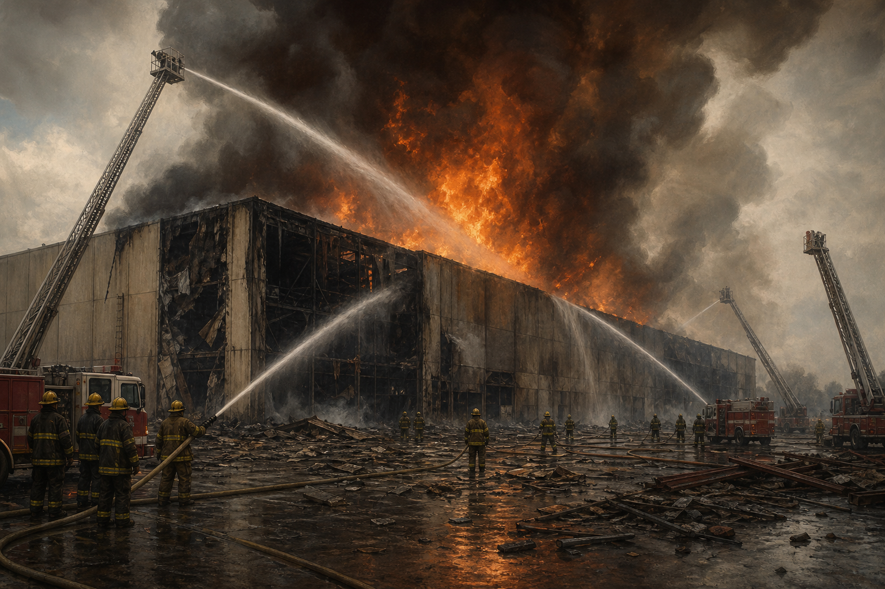
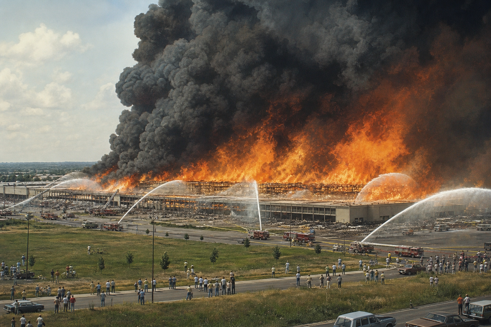

This site documents the sheer scale of the June 21, 1982 warehouse
fire: a blaze that consumed a 1.2 million square foot distribution
center, roughly 27 acres under one roof, and became one of the most
significant industrial fires in Pennsylvania history.
Counter base time: June 21, 1982 at 12:00 PM Eastern.
"It was big." -- K. S.
Scale
A warehouse on the scale of a district, not a storefront.
Contemporary coverage described the building as
1.2 million square feet, approximately
1,000 by 1,200 feet, and about
27 acres under one roof. It supplied hundreds of
stores across multiple states. When the fire outran suppression, the
loss was not a single room or wing. It was the loss of an entire
logistics complex.
Speed
The fire spread faster than the site could support a response.
Fire Engineering reported that a third alarm was requested within
minutes, water supply problems quickly became decisive, and the fire
moved about 1,200 feet in 18 minutes. The result
was a defensive battle against a fire that had already outscaled the
building’s protection systems.
Impact
A total loss measured in acres and millions.
The article placed the total loss at
$113 million in 1982, including the building,
equipment, and merchandise. This site exists to keep the scale of
that event legible: not just that a warehouse burned, but that an
enormous regional distribution hub was gutted.
Source Note
Current reference used for this version.
This page currently draws its scale language from Fire
Engineering’s August 1, 1982 historical archive article,
“Not Enough Water, So Fire Guts 1.2-Million-Square-Foot Warehouse.”
Additional primary sources can be added later.
Anniversary Record
Thirty years later, firefighters still described it as a fire they could only watch consume the building.
Based on Burlington County Times' June 22, 2012 article
“Remembering one of the largest fires in history,” the alarm
sequence escalated almost immediately: first alarm at
12:38 p.m., second at 12:41, third
four minutes later, fourth at 1:01, and a fifth and
final alarm at 1:22. Deputy chief Marv Roberts said
the fire was already through the roof when he arrived.
The article describes a loss of roughly $110 million
in 1982 dollars, more than 300 firefighters on the
scene, a roof collapse about 90 minutes into the
fire, and flames still visible eight hours later even
after the fire was under control. It also records the human scale of
the aftermath: about 375 employees out of work and
mutual-aid crews from 56 Bucks County companies plus
eight from New Jersey working the site over the next
week.
Interview
Interview excerpts.
"i don't remember much about it. i wasn't there" -- C. D.
1 / 4
Why It Spread
A structure built to move merchandise, not to stop a runaway fire.
The Burlington County Times account says the fire began after a can
of carburetor cleaner was knocked from a shelf and struck by an
operating forklift. Roberts recalled that the building had fire
walls but no fire doors, that a water main break limited supply to
nearly 40 trucks, and that even more than 10,000 sprinkler heads
could not control a fire of that scale once it took hold.
Aftermath
The replacement building was bigger, but the fire changed how it had to be built.
The article notes that construction on a replacement distribution
center began about a month later, eventually growing to roughly
double the size of the original 1.2-million-square-foot
facility. Fire doors, a more sophisticated alarm system, and
quadrant-style divisions replaced the earlier open layout that had
allowed the 1982 blaze to race through the building.
Pictures
Visuals.

Illustrative reconstruction of the warehouse inferno and fire
storm conditions described by firefighters.

Illustrative reconstruction of the ground-level firefighting
response as the building became unsalvageable.
Historical content in this section is credited to Burlington County
Times, George Mattar, “Remembering one of the largest fires in
history,” June 22, 2012.
Support Group
Support group.
A group meets bi-annually in June and October in site O-13.
Contact
Get in touch
Our historian is Robert Bologna.
This website is an independent historical project—and a semi-satirical one—and it is not affiliated
with, endorsed by, or sponsored by Kmart or any related brand owner. No one was seriously hurt or killed in this fire.